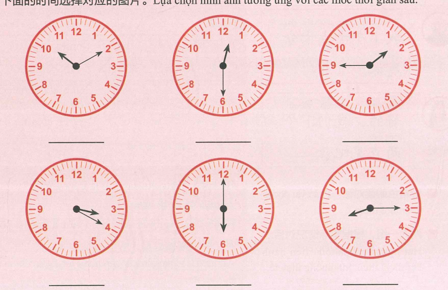
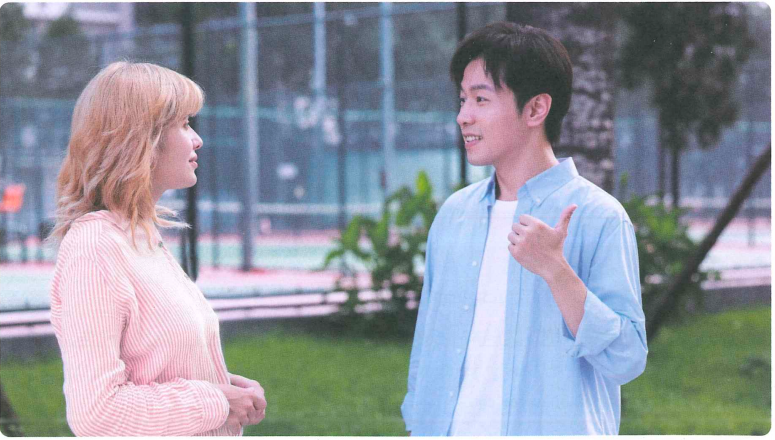
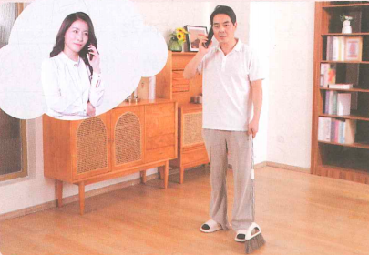
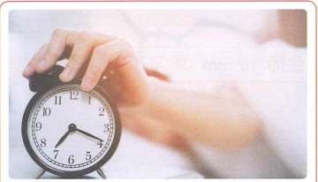
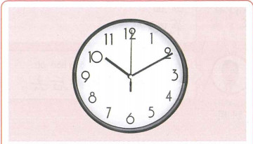
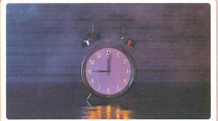
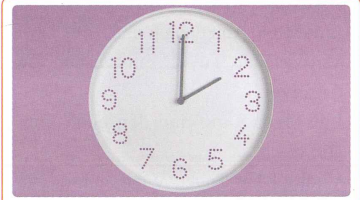

我晚上六点半下班
Em tan làm lúc 6 rưỡi tối
27 từ mới, 3 bài khóa, biểu đạt thời gian, 吧 và 呢 — chia theo từng cụm nhỏ.
Khởi động
Quan sát đồng hồ và đọc thời gian.

⏰ Đọc giờ
8:15 · 15:20 · 10:10 · 13:45 · 12:30 · 18:00
Chọn cách nói đúng
Cụm 1 · Từ vựng
9 từ trước Bài khóa 1.
Bài khóa 1 · 现在几点
Ngữ cảnh: Bạch Gia Nguyệt và Annie đang nói chuyện điện thoại.
Ngữ pháp 1 · Cách diễn đạt thời gian + 吧
点 / 分
九点 → 9:00
十五点四十 → 15:40
二十一点十分 → 21:10
二十二点零五分 → 22:05
Khi số phút dưới 10, đọc thêm 零: 22:05 → 二十二点零五分.
Danh từ chỉ thời gian
上午十点
下午两点半
晚上九点十分
吧 (1)
吧 đứng cuối câu để biểu thị đề nghị, bàn bạc, khuyên nhủ hoặc yêu cầu.
我们下午三点见吧。
✏️ Luyện nhanh
Cụm 2 · Từ vựng
8 từ trước phần nghe Bài khóa 2.
Nghe trước Bài khóa 2
🎧 Nghe hội thoại hai lượt rồi chọn đáp án đúng
Bài khóa 2 · 下午看电影

Ngữ cảnh: Lý Văn gặp Bạch Gia Nguyệt trong khuôn viên trường.
Ngữ pháp 2 · Vị trí trạng ngữ + 呢 (2)
Vị trí của phó từ và từ ngữ chỉ thời gian
我不想去。
她上午十点半上课。
我明天下午两点还上课呢。
呢 (2)
呢 đứng cuối câu để biểu thị sự việc đang được xác nhận hoặc nhấn mạnh.
我明天下午两点还上课呢。
李文晚上还有事呢。
✏️ Luyện nhanh
Cụm 3 · Từ vựng
10 từ cuối trước Bài khóa 3.
Nghe trước Bài khóa 3
🎧 Nghe hội thoại hai lượt rồi chọn đáp án đúng
Bài khóa 3 · 六点半下班

Đọc hiểu: ① 刘明晚上还去做什么？ ② 刘明十分钟后去做什么？
Củng cố · Biểu đạt thời gian
半
六点半 = 6:30
十二点半 = 12:30
分钟后
十分钟后 = sau 10 phút
二十分钟后 = sau 20 phút
✏️ Luyện nhanh
✏️ Luyện tập tổng hợp
Mỗi ảnh là một câu bài tập riêng. Ảnh được giữ nguyên đầy đủ, không cắt mất nội dung.
Câu 1

Câu 2

Câu 3

Câu 4

✅ Tổng kết
Bài 7 đã hoàn thành
- 27 từ mới, chia thành 3 cụm.
- 3 bài khóa với audio do giáo viên cung cấp.
- Nút Play + Pause ở mỗi phần nghe.
- Cách diễn đạt thời gian với 点、分、半.
- Danh từ chỉ thời gian: 上午、中午、下午、晚上.
- 吧 dùng để đề nghị/gợi ý; 呢 dùng để nhấn mạnh/xác nhận.
- Từ ngữ chỉ thời gian và phó từ thường đứng trước động từ/tính từ.
Điểm luyện tập tổng hợp
Chỉ tính 4 câu hình ảnh ở phần luyện tập tổng hợp.